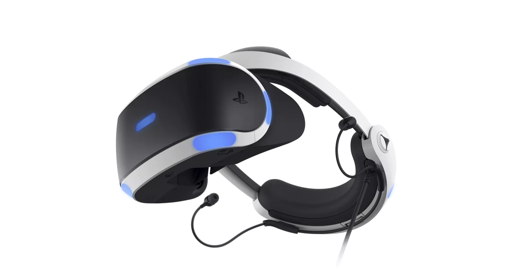

Présentation
Cette page présente l’univers des jeux vidéo : son évolution, ses genres, les plateformes ... Le jeu vidéo est aujourd’hui l’un des domaines de divertissement les plus populaires au monde. Grâce à l’évolution rapide de la technologie, les consoles modernes offrent des expériences immersives, réalistes et accessibles à un large public. Parmi les acteurs majeurs de ce domaine, on retrouve principalement PlayStation et Xbox.
La PlayStation, développée par Sony, est connue pour ses exclusivités très appréciées comme God of War , La dernière console, la PlayStation 5 , propose des graphismes de nouvelle génération, un temps de chargement très rapide et une manette innovante offrant un retour haptique avancé.
De son côté, Xbox, développée par Microsoft, mise sur la performance et les services en ligne. La Xbox Series X est l’une des consoles les plus puissantes du marché.
En plus des consoles traditionnelles, le monde du gaming évolue aussi vers la réalité virtuelle, offrant une immersion encore plus poussée. Des équipements comme le PlayStation VR2.
